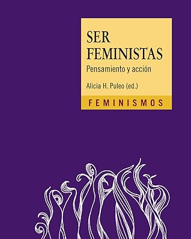

Ser feministas: Pensamiento y acción
Reseña por Jorge I. Zuluaga

Ver reseña en GoodReads (necesita cuenta)
Esta es la primera frase que se me viene a la cabeza después de leer esta poderosa síntesis, editada por la filósofa ecofeminista española Alicia Puleo para la colección de Feminismos de Ediciones Cátedra que ella misma dirige.
Se trata de 42 ensayos escritos por algunas de las más reconocidas filósofas y teóricas del feminismo en Hispanoamérica —y algunas fuera de este ámbito—. los ensayos cubren la mayoría de los tópicos centrales de esta corriente filosófica y política que, cumpliendo ya casi 300 años, lentamente está cambiando la sociedad para el beneficio de todas las personas que la habitamos. En el proceso el feminismo ha producido una revolución moral y social con pocos precedentes en la Historia. Alicia Miyares, filósofa, escritora y autora de uno de los ensayos de esta colección, señala que "el feminismo es una teoría política con el mismo sentido de transformación de la realidad que tuvieron el liberalismo y la social democracia". No podía estar más de acuerdo.
Una de las mejores características de "Ser feministas" es el formato en el que se presentan los ensayos. Todos los ensayos son cortos, no abarcan más de 3 o 4 páginas. Sus autoras tuvieron que sintetizar ideas muy complejas en un pequeño espacio. Esto hace que emerja, en cada ensayo, la verdadera sustancia de cada problema, el quid de cada asunto. Además, hace que la lectura sea fácil de hacer y que el libro se pueda usar como "texto de nochero" que puede irse leyendo, lentamente, ensayo por ensayo, sin perder nunca el hilo.
Todos los textos, con pocas excepciones, están escritos en un lenguaje llano, entendible por aquellas personas que no somos expertas en filosofía, antropología o sociología. Esto hace que el mensaje llegue con una claridad meridiana.
El libro esta ilustrado de una manera muy creativa por la artista y activista Verónica Perales, que usa el cabello y los vellos como tema de la mayoría de las ilustraciones. El resultado no solamente es bello sino que además envía algunos mensajes visuales profundos a la altura de los textos de la colección.
Una característica que me gusto mucho también es que cada ensayo esta antecedido de una frase, una cita o un "grito de batalla" relacionado con el tema que le sucede: "Nos quieren sumisas, nos tienen combativas", "Somos las hijas de las brujas que no pudiste quemar", "Lo personal es político", "Ni la tierra, ni las mujeres somos territorio de conquista", etc. Estas citas le agregan un valor adicional al texto. ¡Geniales!
Es difícil señalar cuáles ensayos me gustaron particularmente o de cuáles aprendí más. Pero si pudiera indicar unos cuántos que en el momento en el que los leí me causaron particular impresión y de los que me quedaron ideas resonando, diría que fueron los de "Misoginia" de Anna Caballé (aprendí que la misoginia va más allá del odio), "El mito de la libre elección" de Ana de Miguel Álvarez (me dió mejores criterios para entender mejor los límites de la libertad y la discusión, por ejemplo, sobre la prostitución con la que no estoy de acuerdo), "Ética del cuidado" de Angélica Velasco (que buen concepto este y que lejos estamos de hacerlo universal), "Educación Afectivo-Social" de Amalia González y "Educación Feminista" de Paloma Alcalá (la revolución educativa que necesitamos), "Pasión por el saber" de Isabel Morant (o el llamado por una nueva ilustración, una que nos incluya a todas las personas y tenga valores intelectuales distintos), "Patriarcado" de Alicia Puleo (con la definición más rigurosa que he leído). Difícil no dejar por fuera de esta reducida selección a otros ensayos poderosos. Solo me quedaría por agregar "Hombres profeministas" del que hablaré más abajo.
A partir de este punto en la reseña les presento una posición más personal de los experiencias leyendo de feminismos, incluyendo después de leer este libro. Lo que sigue no trata solamente del libro, así que quienes quieran pueden ahorrarse la lectura a partir de aquí.
He tenido la oportunidad de leer ya un puñado de libros de feminismos. Desde textos generales o introductorios (Feminismo para principiantes, Feminista por accidente, etc.), pasando por otros más específicos pero igualmente divulgativos (Las mujeres que luchan se encuentran, Prehistoria de mujeres, Ni musas, ni sumisas, etc.) hasta otros mucho más profundos (Kaliban y la Bruja, El origen del patriarcado, etc.) Estas lecturas me han dado una perspectiva relativamente amplia del género —en el sentido literario de la palabra, naturalmente— y puedo afirmar que la colección de ensayos en "Ser Feministas" es una excelente manera de introducirse en muchos de las discusiones, en los problemas, en las teorías históricas y políticas, que he tenido la oportunidad de conocer en otros libros de feminismos.
Todo esto para decir que "Ser feministas" puede funcionar bien como una primera introducción al vasto mundo de la teoría feminista. Es cierto también, como lo reflejan algunas reseñas de este libro aquí en Goodreads, que para algunas personas puede no funcionar tan bien como primer libro en el tema. Tal vez, como pasa con tantas cosas, incluso el material más sintético y divulgativo, sólo es plenamente apreciable cuando ya tienes unas "horas de vuelo" en una disciplina.
Como hombre privilegiado socializado en el patriarcado, ignorante por la mayor parte de mi vida de las reivindicaciones de las mujeres, la mayoría relacionadas con derechos elementales; como hombre machista, como casi todos, que cometió muchos errores al relacionarse con las mujeres de su vida —mi madre y mis hermanas, mi esposa, mi hija, mis estudiantes— no dejo de apreciar cada párrafo de estos libros que iluminan una parte del mundo que había estado totalmente oculta para mí. Oculta por esa ceguera social que produce el privilegio ("¿Inseguridad, cuál inseguridad?, ¿Desigualdad económica, cuál? ¿Violencia, cuál violencia? ¿Patriarcado, cuál patriarcado?")
No solo el deseo de corregir mis defectos, pasados y presentes, me han hecho leer de feminismos. También mi curiosidad intelectual me ha empujado hacia la teoría feminista, no solo por el sentido de la justicia que defiende—un tema que siempre me ha interesado—, sino también por las ideas de cambio social originales y poderosas que encierra.
Leo de feminismos porque entendí que todas las personas debemos comprender la situación de las mujeres, la historia de su sometimiento, para poder contribuir a crear un mundo en el que podamos vivir mejor todas y todos.
Un concepto muy interesante que aprendí en este libro, y lo hice precisamente a través del único ensayo escrito por dos hombres, Octavio Salazar e Iván Sambade, concepto que seguiré usando para describir mis intereses intelectuales y sociales por los feminismos, es el de hombre profeminista.
Es una discusión abierta si los hombres podemos ser feministas o no. El consenso más o menos general es que no, una idea que comparto cabalmente. Pero todos podemos ser profeministas. Leer de feminismos, informarnos, escuchar lo que tienen las activistas, las filósofas y las políticas de esta corriente para decir sobre los distintos problemas sociales que afectan a las mujeres, pero en general que afectan a la sociedad como un todo y que admiten una mirada más amplia como la que ellas ofrecen.
Podemos apoyar a las mujeres en sus luchas, o al menos no oponernos con razones que han sido una y otra vez desvirtuadas y que solo se conocen leyendo de feminismos.
La lectura continúa. El aprendizaje continúa.